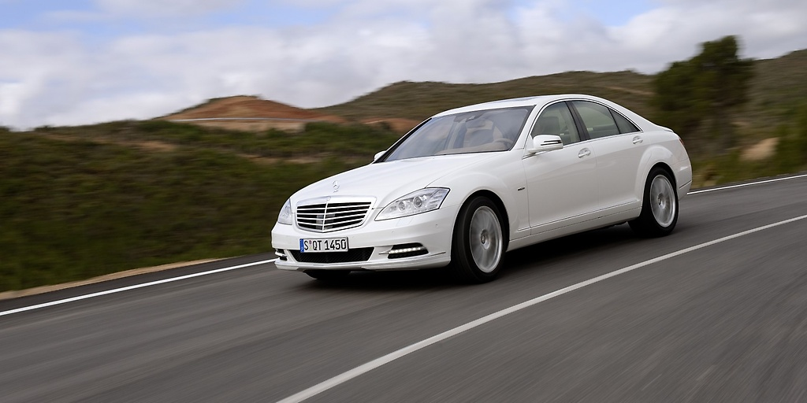
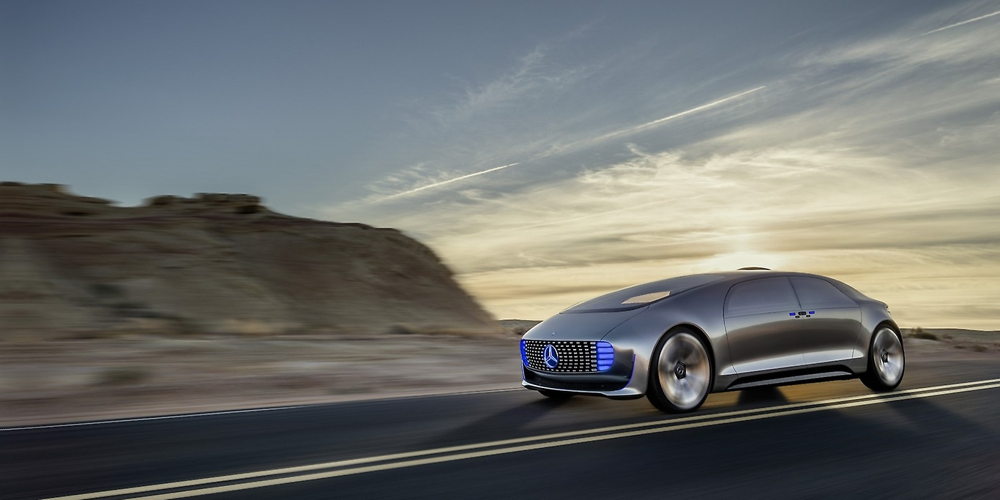

1885–1886. Самый первый автомобиль
Первым стационарным бензиновым двигателем, разработанным Карлом Бенцем, был одноцилиндровый двухтактный агрегат, который впервые заработал в канун Нового 1879 года. Бенц добился такого коммерческого успеха с этим двигателем, что смог посвятить больше времени своей мечте. создания легкого автомобиля с бензиновым двигателем, в котором шасси и двигатель образуют единое целое.
1933 - 1945. Daimler-Benz AG
С 1937 года компания Daimler-Benz AG все чаще производила такие элементы вооружения, как грузовики LG 3000 и авиационные двигатели, такие как DB 600 и DB 601. Для создания дополнительных мощностей для производства авиационных двигателей в дополнение к заводу в Мариенфельде завод Геншаген был построен в хорошо скрытый лесной участок к югу от Берлина в 1936 году.
1949 - 1960. Mercedes-Benz 300 SL

В период с 1949 по 1960 год в быстроразвивающейся автомобильной промышленности Германии Daimler-Benz AG удалось вернуть себе позиции, которые она занимала до Второй мировой войны. Уже в 1954 году компания преодолела миллиардную отметку по обороту и тем самым побила существующий рекорд продаж.
1961 - 1983 Рост во всех сферах

Компания Daimler-Benz, разносторонний специалист в автомобильной промышленности, сохранила свои выдающиеся позиции на международных автомобильных рынках в 1960-х и 1970-х годах, в то время как в отрасли в целом наблюдались резкие колебания продаж. В Европе Daimler-Benz был лидером как по производству автомобилей для требовательной клиентуры, так и грузовиков и автобусов.
1984 - 1995. Интегрированная технологическая группа.

Второй нефтяной кризис в конце 1970-х, усиление экологических дискуссий и появление новых азиатских конкурентов изменили основные условия для дальнейшего развития компании. На фоне общего снижения производственных показателей сектор коммерческих автомобилей упал. Возможности продаж автомобилей высшего качества на рынках, имеющих отношение к Mercedes-Benz, также вызвали осторожную оценку. По инициативе тогдашнего финансового директора, а затем председателя правления Эдзарда Рейтера, компания должна была стать более независимой от циклических колебаний в автомобильном секторе за счет увеличения корпоративного портфеля. Доступ к ключевым технологиям и развивающимся секторам, таким как электроника, авиация и услуги, рассматривался как предварительное условие для сохранения прибыльности компании в долгосрочной перспективе. За счет многостороннего использования различных технологий должны были быть приобретены перспективные, расширяемые ключевые компетенции и достигнуты синергетические эффекты. На этом фоне были приобретены 50% -ная доля MAN в MTU München, контрольный пакет акций группы Dornier (1985), а также AEG (1985) и MBB (1989). Эти приобретения потребовали реструктуризации интегрированной технологической группы. В рамках новой корпоративной структуры Daimler Benz AG 29 июня 1989 года была основана компания Mercedes-Benz AG. Председателем Правления стал профессор Вернер Нифер. Таким образом, с июля 1989 года Daimler-Benz AG действовала как управляющая холдинговая компания, под крышей которой были собраны корпоративные подразделения AEG AG, Mercedes-Benz AG и Deutsche Aerospace (DASA). В 1990 году к ним присоединилось четвертое корпоративное подразделение, Daimler-Benz InterServices AG (debis). В 1993 году Daimler-Benz AG была зарегистрирована на Нью-Йоркской фондовой бирже (NYSE).
2008 - 2009. Мировой экономический кризис и возвращение
В результате кризиса недвижимости в США во всем мире началась рецессия. Поразив финансовый сектор только вначале, в конце 2008 года он перерос в глобальный экономический кризис, который глубоко затронул автомобильную промышленность во всем мире. Все более мрачная ситуация на автомобильном рынке также привела к убыткам Daimler AG с середины 2008 года. В начале 2009 года Daimler увеличила свой акционерный капитал примерно на десять процентов и приобрела Aabar Investments PJSC, инвестиционную компанию, зарегистрированную в Абу-Даби, в качестве нового крупного акционера. Устойчивое финансовое положение компании позволило ей продолжать инвестировать крупные суммы в исследования и разработки в период, который характеризовался экономической неопределенностью и макроэкономической нестабильностью. Эта работа была сосредоточена в основном на разработке новых альтернативных технологий привода, которые были развернуты, например, в F-Cell B-класса, Concept Blue Zero E-Cell Plus и гибридной технологии S 500 Plug-in Hybrid. Благодаря этим разработкам Daimler играет новаторскую роль на пути к устойчивой мобильности без выбросов. Как в сегменте легковых, так и коммерческих автомобилей, несмотря на кризис, Daimler AG продолжала развивать и расширять коммерческую деятельность с учетом будущих рыночных потенциалов - в том числе и на азиатском рынке. Результатом сотрудничества с Beijing Automotive Industry Holding Company (BAIC) стало открытие нового производственного предприятия в Пекине, которое производит автомобили E-Class и C-Class для азиатского рынка.
2012–2015 годы. Основные вехи на будущее
Множество новых легковых и коммерческих автомобилей, оснащенных интеллектуальными системами помощи и экологически безопасными приводами, являются ключевыми вехами для будущего нашего бизнеса и самым ценным автомобильным брендом премиум-класса.
Сайт был сделан Weliel.ga
.